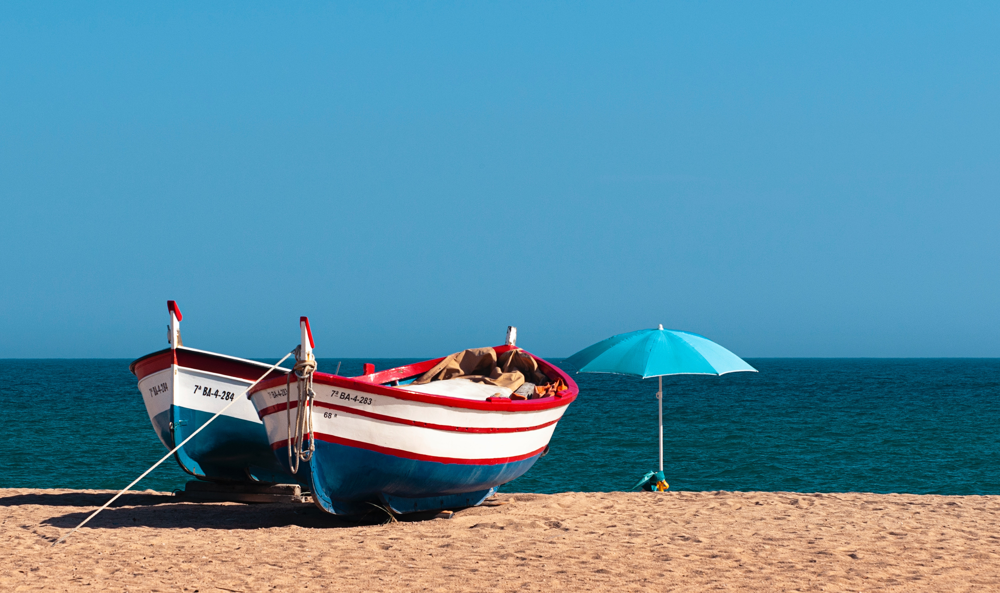

Boats are watercrafts designed to float and navigate on water, primarily used for transportation, fishing, recreation, and military purposes. They vary greatly in size, shape, and function, ranging from small rowboats and canoes to large vessels like yachts and ferries. The term "boat" is often used for smaller vessels, while larger ones are typically called ships.
